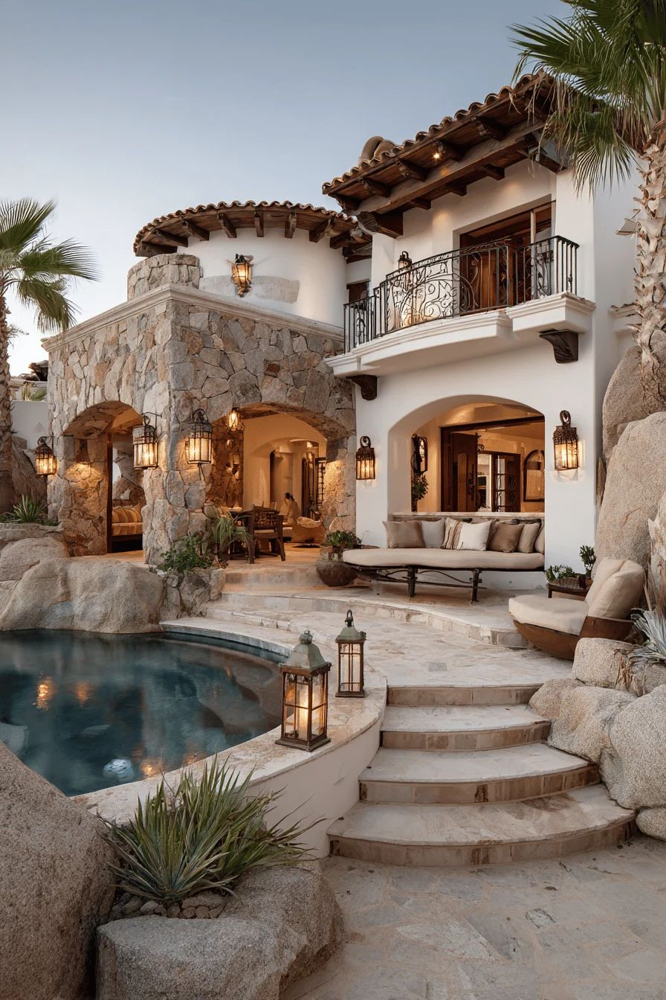
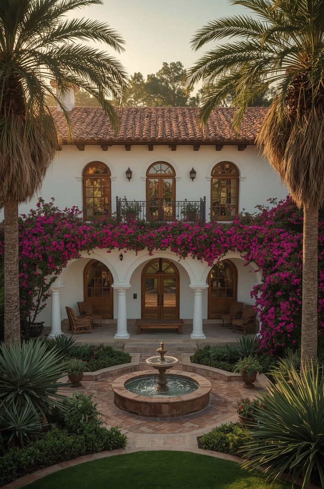

Spanish-style homes feature warm colors, clay tile roofs, and beautiful arches. These homes are inspired by Mediterranean architecture and are known for their cozy, timeless appearance.
 | Feature | Description |
|---|---|
| Roof Type | Red clay tiles |
| Exterior | Stucco walls |
| Windows | Arched frames |
| Design | Warm tones, rustic wood |